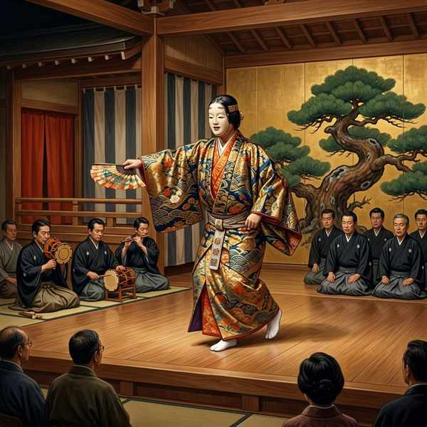
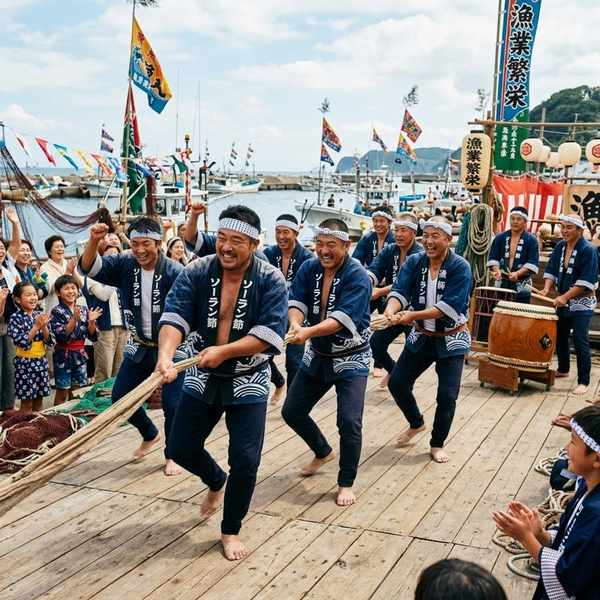
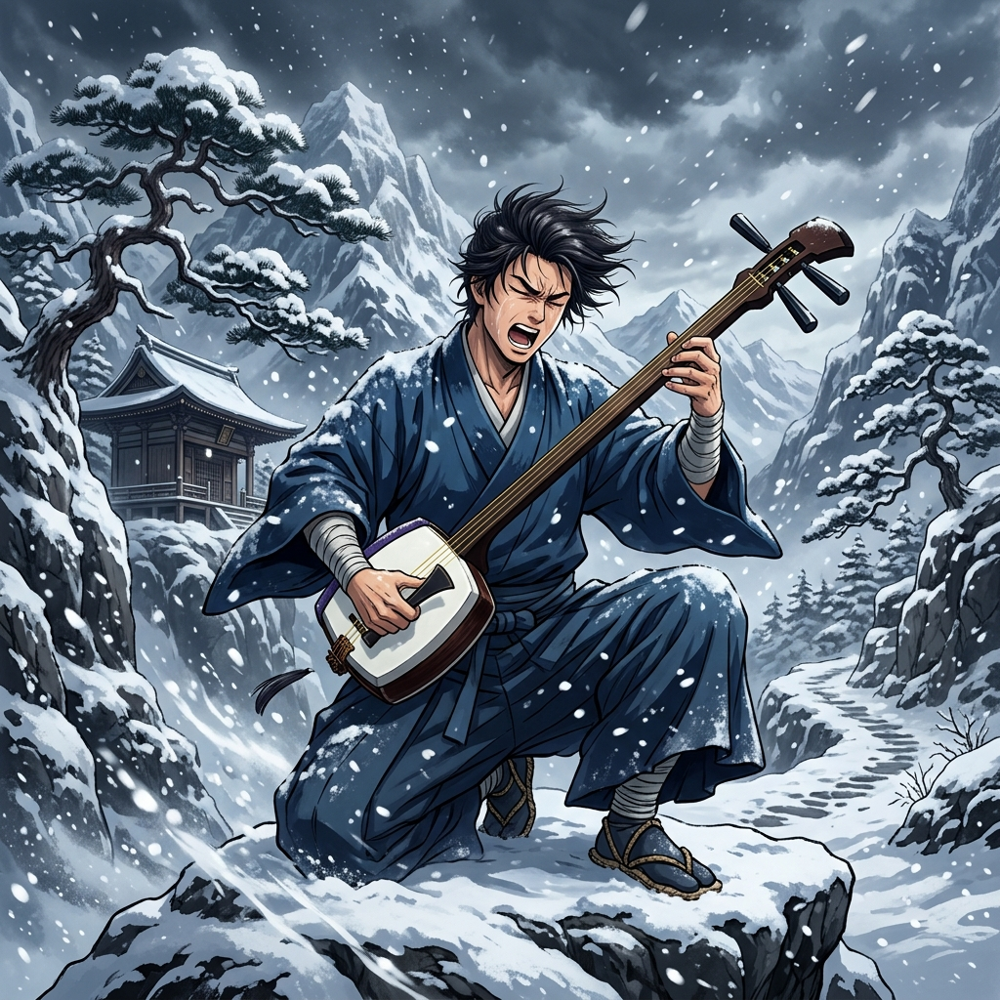
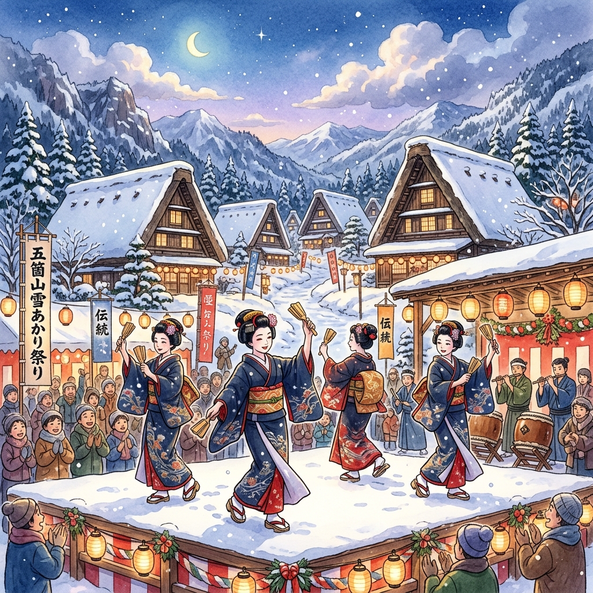
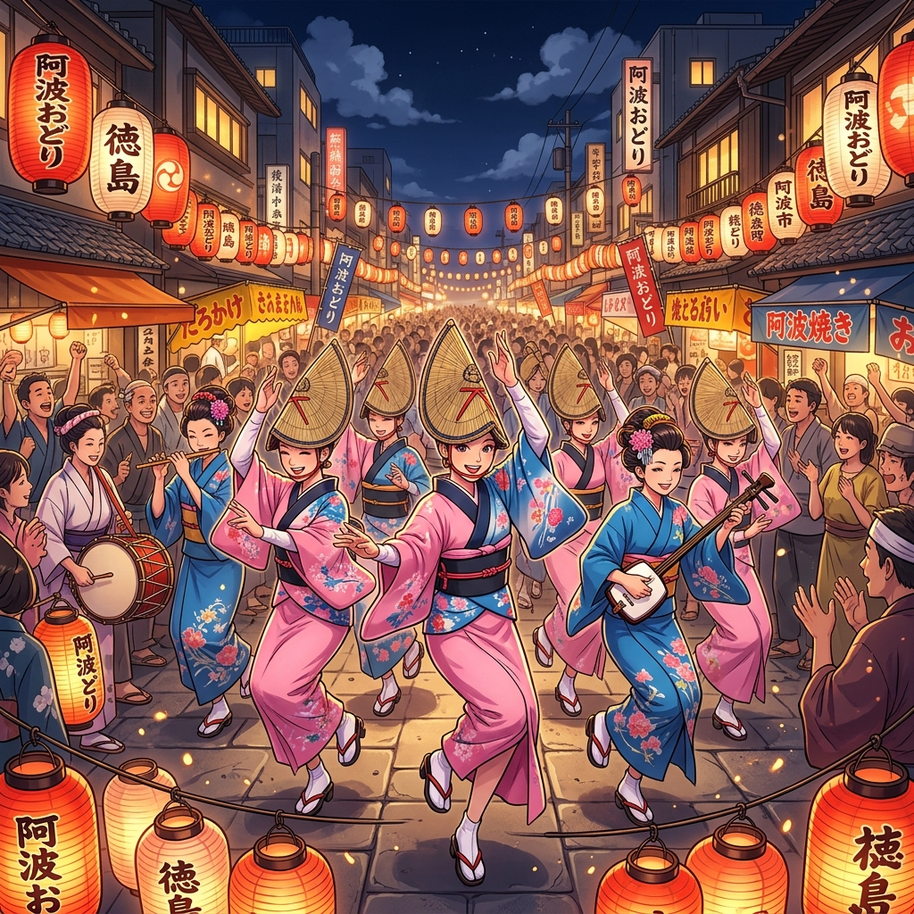

中学音楽（鑑賞曲）
鑑賞曲⑤ (能「敦盛」・日本の民謡・世界の音楽)
室町時代から伝わる日本の伝統仮面劇「能」、日本の各地で歌い継がれてきた「民謡」や祭礼の「郷土芸能」、そして世界の多様な民族楽器やポピュラー音楽の潮流の3分野を解説します。都道府県や楽器の対応、独特の音階を確実に暗記しましょう！
1. 能 「敦盛（あつもり）」

シテが能面をかけて演じる、室町時代から伝わる歌舞劇。
① 基本データ
- 大成した親子：観阿弥（かんあみ）と世阿弥（ぜあみ）（室町時代に能の芸術性を極限まで高めました）
- 成立した時代：室町時代
- 支援した将軍：室町幕府第3代将軍の足利義満（あしかがよしみつ）
- 音楽の役割分担：
- 謡（うたい／地謡）：コーラス（合唱）のように物語の状況や感情を歌うグループ。
- 囃子（はやし）：楽器での伴奏を担当するグループ。
② 登場人物・舞台・楽器
- シテ ➔ 能の上演における主役のこと。多くの場合は亡霊や神仏などの超自然的な存在で、面（おもて）をかけて舞います。
- ワキ ➔ 主役の相手役をつとめる脇役のこと。面はかけず、現世に生きる人間（僧侶や武士など）を演じます。
- 橋掛り（はしがかり） ➔ 能舞台の左奥から本舞台へと長くのびた、廊下のような通路。登場や退場の際に重要な演出として使われます。
- 囃子（伴奏）で使われる楽器（4つ）：
- 笛（能管［のうかん］） ➔ 唯一の管楽器（主旋律や合図を吹く）。
- 小鼓（こつづみ） ➔ 紐（しらべ）を握る左手で音高を変える打楽器。肩にのせて打ちます。
- 大鼓（おおつづみ） ➔ 固く締められた革を力強く打つ打楽器。左腰に構えて打ちます。
- 太鼓（たいこ） ➔ バチを使って打つ、最も大きい打楽器（曲の盛り上がりやシテの舞の伴奏に用います）。
2. 日本の民謡と郷土芸能
日本各地の生活や仕事の中から生まれ、口づてで伝えられてきた「民謡」や、祭礼などで披露される「郷土芸能」です。テストでは曲名と都道府県のペア、および音階名が頻出です。
① 民謡・郷土芸能と都道府県の対応

ソーラン節（北海道）

津軽じょんから（青森県）
佐渡おけさ
（新潟県）
（新潟県）

こきりこ節（富山県）
こんぴら船々
（香川県）
（香川県）
五木の子守唄
（熊本県）
（熊本県）
谷茶前
（沖縄県）
（沖縄県）
秩父夜祭
（埼玉県）
（埼玉県）
天神祭
（大阪府）
（大阪府）

阿波おどり（徳島県）
博多祇園山笠
（福岡県）
（福岡県）
② 日本独自の5音音階（テスト空欄補充必出！）
- 沖縄（琉球）音階 ➔ 「谷茶前」などで用いられる音階。「レ」と「ラ」が抜けた特有の5音（ド・ミ・ファ・ソ・シ）からなり、南国らしい明るい響きが特徴です。
- 民謡音階 ➔ 「こきりこ節」などで用いられる、日本の民謡に最も多く見られる音階。「レ」と「ソ」が抜けた5音からなります。
3. 世界の音楽
世界の多様な民族の歴史や生活の中で育まれた楽器や、19世紀以降に広まったポピュラー音楽の特徴です。
アジア、アラブ、アメリカなど世界各地に伝わる特色ある楽器と音楽ジャンル。
- タブラー（インド） ➔ 2個1対の、高音用と低音用の太鼓からなる北インドの代表的な打楽器。指先や手のひらを駆使して複雑なリズムを奏でます。
- ゴスペル（アメリカ） ➔ アフリカ系アメリカ人が歌い始めた、キリスト教の神への賛歌。ソウルフルな合唱スタイルが特徴。
- 京劇［ジンジュ］（中国） ➔ 中国の代表的な伝統的歌舞劇。独特の高音の歌声や、アクロバティックな演技・立ち回りが特徴。
- ウード（アラブ諸国） ➔ アラブの伝統的な撥弦楽器（ひっぱって音を出す弦楽器）。日本の「琵琶（びわ）」の祖先にあたります。
- フラメンコ（スペイン） ➔ スペイン南部のアンダルシア地方で生まれた音楽。歌（カンテ）、踊り（バイレ）、ギター（トケ）の激しい掛け合いが特徴。
- ジャズ（アメリカ） ➔ 19世紀末にアメリカのニューオーリンズで生まれた音楽。楽譜通りでなく、その場の即興で演奏を作り上げる即興的な演奏法（アドリブ）が最大の特徴です。
🔥 定期テスト対策・暗記のコツ
① 能の囃子楽器（4つ）の名称
能管（笛）、小鼓、大鼓、太鼓の4つです。大鼓は「おおつづみ」、小鼓は「こつづみ」と読みます。それぞれの漢字を正しく書けるようにしてください。
② 音階の「何抜き」か（超頻出！）
「レとラが抜けているのは沖縄（琉球）音階」、「レとソが抜けているのは民謡音階」です。どちらが何の音を抜いているのか、テスト前に必ず再確認しておきましょう！
③ 世界の音楽の「ウード」と「ジャズ」
琵琶に似たアラブの楽器は「ウード」です。また、ニューオーリンズで生まれ、アドリブ（即興的演奏法）を特徴とするのは「ジャズ」です。それぞれの記述と記号選択の対策を徹底しましょう！